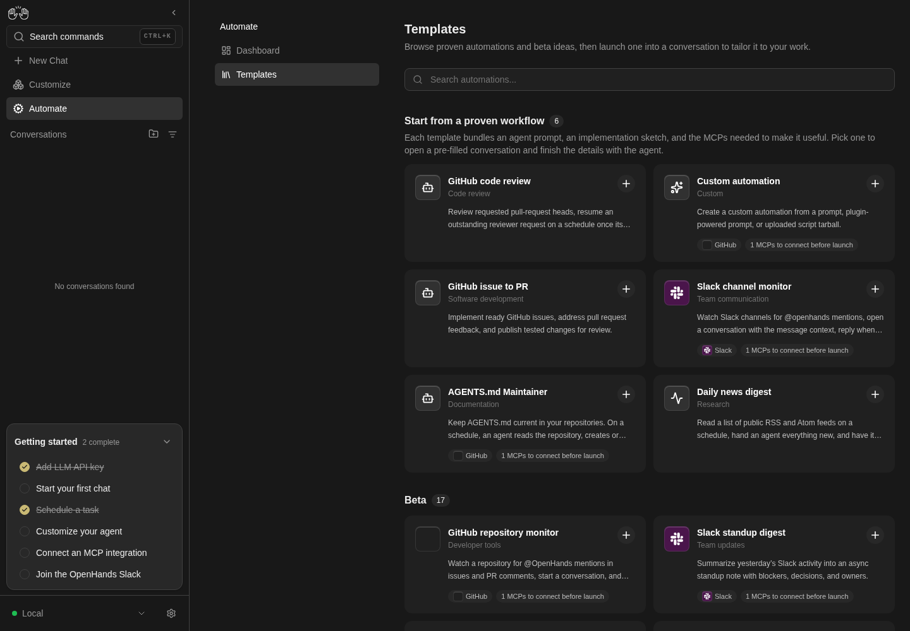
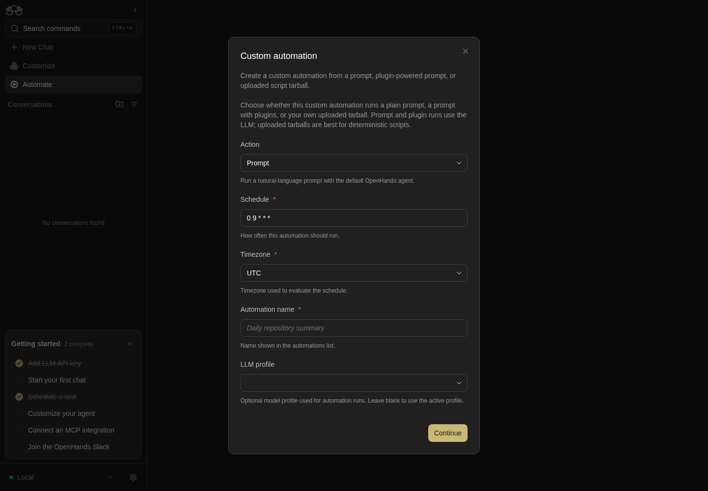

How to get to it
- Sidebar Automate (
sidebar-automations-link), then Templates in the Automate sub-page nav (automations-navbar-desktop >> automations-navigation-templates; at phone widthautomations-navbar-mobile). The command menu has no Templates entry (searchingtemplategives No commands found). - Direct URLs
/automations/templatesand/automations/new/<catalog-id>(for example/automations/new/custom-automation,/automations/new/news-digest,/automations/new/qa-changes). A deep link opens the setup dialog over the page; it bypasses the responder and install-queue dialogs that a card click shows first. - Template cards elsewhere use the same launcher: the Recommended automations rail on home/New Chat (F03) and on the empty dashboard (F21.empty-rail), and the onboarding say-hello step (F01).
- Dashboard header Add Automation (
automations-add-automation) → Create Automation (automations-add-automation-create) or Import automation (automations-import-automation). The empty dashboard also shows the Create Automation instructions inline (automations-empty >> automations-create-automation).
Before you start
Start with the common launch and health checks, then follow this family’s preconditions in order. Recipes share the fixtures and state named below.
Preconditions:
- Baseline state (launched, doctored,
onboard --skipdone) andcontrol-openhands llm preset deepseek(the setup form's LLM profile field lists saved profiles; the agent check needs a model). - No automation named
QA_F22 …orDaily news digest(control-openhands api GET '/api/automation/v1?limit=100'), noOPENHANDS_URLsecret (control-openhands api GET /api/settings/secrets) and no MCP server installed (control-openhands api GET /api/settings,mcp_configempty). An existingOPENHANDS_URLskips the secret creation in the responder recipe; an installed Slack/Linear/Tavily server skips its install dialog. - Import fixtures (arrange only; each command prints the path,
$OH_VERIFY_RUN/evidence/_fixtures/<name>):control-openhands fixture file --name qa-f22-import.automation.json --content '{"version":1,"kind":"automation","spec":{"name":"QA_F22 Imported","trigger":{"type":"cron","schedule":"0 0 1 1 *","timezone":"UTC"},"enabled":true,"prompt":"Reply with the single word: pong. Do not run any tools.","plugins":["github:OpenHands/extensions/plugins/qa-none"]}}',control-openhands fixture file --name qa-f22-view.automation.json --content '{"version":1,"kind":"automation","spec":{"name":"QA_F22 View","trigger":{"type":"cron","schedule":"0 0 1 1 *"},"enabled":true,"prompt":"Reply with the single word: pong. Do not run any tools."}}',control-openhands fixture file --name qa-f22-broken.json --content '{"version": 1, "kind": 'andcontrol-openhands fixture file --name qa-f22-schema.json --content '{"version":2,"kind":"automation","spec":{"name":"","trigger":{"type":"event"},"enabled":"yes","prompt":"x"}}'. - Every automation created here uses the yearly cron
0 0 1 1 *, so none fires during the run. - Tarball fixture (arrange only):
control-openhands fixture tarball --name qa-f22-tarballwrites$OH_VERIFY_RUN/evidence/_fixtures/qa-f22-tarball.tar.gz(onemain.pythat printspong). - Blocked here: completing
F22.template-mcp-install-queue(and launching a card whose only missing integration is installable, such asresearch-brief-writer) needs a real Slack, Linear or Tavily credential: the install dialog tests the connection before saving.
Behavior inventory
29 stable behavior IDs and their expected behavior
F22.templates-page/automations/templatesshows the h1 Templates, a description, a search box, Start from a proven workflow with a count badge (6) and a Beta section (17). Read recipe ↓F22.template-cardeach card shows an icon or logo stack, name, category, two-line description, a plus badge and integration pills (N MCPs to connect before launch,Needs external setupfor Jira/Bitbucket;Connectedonce installed, which needs a working integration and was not reached here); a+Noverflow button opens a popover without launching the card. Read recipe ↓F22.templates-searchthe search box narrows cards by name, category, description, launch prompt and integration names; a query that matches nothing should say so. Read recipe ↓F22.template-launch-setupa card whose entry ships a setup form (custom-automation, news-digest, github-pr-reviewer, qa-changes, …) navigates to/automations/new/<id>. Read recipe ↓F22.template-launch-conversationa card without a setup form and with no installable integration missing creates a conversation and pre-fills its composer with the entry's launch command (for example/ticket-to-code-change:setup); nothing is sent until the user presses send. Read recipe ↓F22.template-mcp-install-queuea card with missing required integrations opens each one's install dialog in turn; Cancel abandons the launch without creating anything. Read recipe ↓F22.responder-deployment-choiceon a local backend a GitHub/Slack-only responder card first asks Choose how your responder should run; Continue with local setup creates theOPENHANDS_URLsecret and continues, Open OpenHands Cloud integrations opens Cloud in a new tab, X and Escape cancel. Read recipe ↓F22.responder-local-launchwith the responder's integration already installed (Slack for Slack standup digest), Continue with local setup skips the install dialog and opens a new conversation whose composer is pre-filled with the entry's setup command (/standup-digest:setup). Nothing is sent until the user presses send; Send delivers it as the user message. Read recipe ↓F22.setup-prerequisitesBefore you start lists the entry's integrations with the reason each is needed and Manage integrations (/mcp); Continue is disabled while a required integration is missing; an entry with nothing to check skips the step. Read recipe ↓F22.setup-action-kindthe Action combobox (custom-automation: Prompt / Plugin / Upload tarball) swaps the action fields and keeps shared values. Read recipe ↓F22.setup-form-validationContinue checks fields locally (This field is required.,Must be at least N characters.,Must be at most N.) and a field blur sends the draft to the service, whose errors appear under the field (Value error, Invalid cron expression: …). Read recipe ↓F22.setup-agent-profilethe Agent profile combobox appears only for actions that create through/v1(Upload tarball and bundle entries), not for Prompt or Plugin; it listsDefaultand every saved agent profile and showsDefaultwhile no profile is chosen, picking a profile hides the LLM profile field, switching to Prompt or Plugin clears the choice, and the automation is created with thatagent_profile_id. Read recipe ↓F22.setup-plugin-createthe Plugin action takes plugin sources and a prompt, and a picked Timezone carries through Review into the created automation (preset_metadata.plugins,trigger.timezone). Read recipe ↓F22.setup-tarball-createthe Upload tarball action requires a.tar/.tar.gzfile, shows its file name in Review and creates an automation with the uploaded tarball and the entrypoint. Read recipe ↓F22.setup-repository-lista repository list field has Add (disabled while the input is empty) and a Remove per row; an empty required list is refused. Read recipe ↓F22.setup-review-confirmReview lists every value (Not setfor blanks); Back keeps the values; Confirm and create creates the automation (enabled) and replaces the URL with its detail page. Read recipe ↓F22.setup-bundle-createa bundle entry (Daily news digest) uploads its script tarball and creates an automation with the bundle's entrypoint, without any account. Read recipe ↓F22.setup-unsupportedan entry this deployment cannot run (qa-changes needs event triggers) shows Not available, the unmet requirements, Close and Set up in a conversation. Read recipe ↓F22.setup-fallback-conversationSet up in a conversation creates a conversation seeded with the entry's setup message. Read recipe ↓F22.setup-closeX or Escape goes back in history; on a cold deep link it replaces the location with/automations. Read recipe ↓F22.setup-unknown-id/automations/new/<id>for an id no catalog entry claims is a 404. Read recipe ↓F22.create-helper-conversationAdd Automation → Create Automation opens How to create an automation; its Create Automation closes the dialog, opens/conversationsand pre-fills the composer withCreate an automation; an agent asked to create an automation creates it. Read recipe ↓F22.import-pickerAdd Automation → Import automation opens a dialog that explains the format (docs link), says the import is disabled, and offers a dropzone and Choose file. Read recipe ↓F22.import-validationa file that is not JSON shows the toastThe selected file is not valid JSON.; a JSON file that breaks the format shows one toast listing every issue; the dialog stays on the picker. Read recipe ↓F22.import-previewa valid file switches the dialog to a preview (Name, Trigger, Prompt, Plugins) with the disabled notice, Cancel and Import automation. Read recipe ↓F22.import-confirmImport automation readsImporting...while pending, closes the dialog, showsImported "<name>" as disabled. View automation, and the automation is listed disabled; the toast link opens its detail page. Read recipe ↓F22.import-choose-fileChoose file, and a click anywhere on the dropzone, open the browser's file chooser; the chosen file is previewed. Read recipe ↓F22.import-dropzonedragging a file over the dropzone highlights it (data-active="true"); dropping a.jsonfile previews it like Choose file. Read recipe ↓F22.phonethe Templates grid, the setup dialog and the import dialog fit a 390 px viewport without horizontal overflow. Read recipe ↓
Readable recipes
Read each script from top to bottom. Code is copied from the map; prose gives the action, expected observation, and conditions. <id>, <run> and similar placeholders stand for values from your own run. Short forms such as browser count continue the same control-openhands invocation; they are kept as documented.
Expected observations describe the recipe’s contract. Captures below selected recipes show representative real states from this snapshot; they do not mark every mapped behavior as passed. Follow cleanup before moving to another family.
No recipes match. Try another word or a behavior ID.
Templates page #
- NoteFrom
/run - Check
control-openhands browser click 'testid=sidebar-automations-link' --expect-url '/automations$' - Do
control-openhands browser click 'testid=automations-navbar-desktop >> testid=automations-navigation-templates' --expect-url '/automations/templates' - Check
control-openhands browser text 'role=main >> role=heading[level=1]'(
Templates), - Check
control-openhands browser count '[data-testid^="recommended-automation-card-"]'(
23) and - Check
control-openhands browser count 'testid=recommended-automations-beta-section >> [data-testid^="recommended-automation-card-"]'(
17);browser text 'testid=recommended-automations-beta-heading'isBetaand17. - Check
control-openhands browser snapshot 'role=main' --max-lines 60shows
heading "Start from a proven workflow"with the count6. - NoteTake
- Do
control-openhands browser screenshot --feature F22.templates-page --name grid - Do
control-openhands browser goto /automations/templates - Noterenders the same page.

The Templates page displays its workflow grid and Custom automation card.
Templates browse only; no template creates an automation.
How this screenshot was taken
agent server: 1.53.0 · automation: 1.19.0 (launcher default) · canvas: 1.26.0
control-openhands browser goto /automations/templates
control-openhands browser wait testid=recommended-automation-card-custom-automation --timeout 10000
control-openhands browser screenshot --feature F22.templates-page --name templatesCards and pills #
- Check
control-openhands browser testids 'testid=recommended-automation-card-research-brief-writer' --hidden - Note:
recommended-automation-icon-…,recommended-automation-plus-…,recommended-automation-pills-…andrecommended-automation-pills-research-brief-writer-overflow(Show 1 more). - Check
control-openhands browser testids 'role=main' --hidden --filter integrationlists
automation-integration-external-jiraandautomation-integration-external-bitbucket(Needs external setup). - Do
control-openhands browser click 'testid=recommended-automation-pills-research-brief-writer-overflow' - Noteopens a popover (
browser snapshot 'role=dialog':dialog: 2 MCPs to connect before launch) and the URL stays/automations/templates; - Do
control-openhands browser press Escape - Notecloses it (
browser count 'role=dialog'0).
Search #
- Do
control-openhands browser fill 'role=main >> placeholder=Search automations...' tavily - Check
control-openhands browser testids 'role=main' --filter recommended-automation-card - Note: only
recommended-automation-card-research-brief-writer(matched through its Tavily integration). - Do
control-openhands browser fill 'role=main >> placeholder=Search automations...' qa-no-such-template - Check
control-openhands browser count 'testid=recommended-automations-section' - Do
control-openhands browser screenshot --feature F22.templates-search --name no-match - NoteExpected: a "no templates match" message.
- NoteActual: the count is
0andbrowser text 'role=main'is only the title and description; the area under the search box is blank (recorded asfail). - NoteClear with
- Do
control-openhands browser fill 'role=main >> placeholder=Search automations...' ''(23 cards again).
Card opens setup, prerequisites #
- Check
control-openhands browser click 'testid=recommended-automation-card-custom-automation' --expect-url '/automations/new/custom-automation' - Check
control-openhands browser snapshot 'testid=setup-dialog' - Note: heading
Before you start,GitHub Optional. Used when you choose a GitHub repository…, linkManage integrations(/mcp) andContinue; - Check
control-openhands browser enabled 'testid=setup-continue-button'is
true(an optional integration only warns). - Do
control-openhands browser click 'testid=setup-continue-button' - Notethe heading becomes
Custom automationandbrowser testids 'testid=setup-dialog'listssetup-action-kind,setup-field-schedule(0 9 * * *),setup-field-timezone(UTC),setup-field-name,setup-field-model,setup-field-timeout,setup-field-prompt,setup-field-repositoryandsetup-field-ref. - ExpectThere is no Trigger selector here because this deployment only supports
cron, and noautomation-agent-profilebecause the default Prompt action cannot take one (F22.setup-agent-profile).

Custom automation card opens prerequisite step; Continue reveals setup fields.
Setup form was not submitted. API-arranged dummy automations remain disabled; no external integrations installed.
How this screenshot was taken
agent server: 1.53.0 · automation: 1.19.0 (launcher default) · canvas: 1.26.0
control-openhands browser goto /automations/templates
control-openhands browser click testid=recommended-automation-card-custom-automation --expect-url /automations/new/custom-automation
control-openhands browser click testid=setup-continue-button
control-openhands browser screenshot --feature F22.template-launch-setup --name custom-setupValidation #
- NoteClick
testid=setup-continue-buttonwith the form untouched: - Check
control-openhands browser text 'testid=setup-field-name-error' - Noteand
... 'testid=setup-field-prompt-error'areThis field is required.Filltestid=setup-field-timeoutwith5000,testid=setup-field-namewithQA_F22 Custom,testid=setup-field-promptwithReply with the single word: pong. Do not run any tools., click Continue:browser text 'testid=setup-field-timeout-error'isMust be at most 1800.Fill the timeout with60. - NoteService preflight:
- Do
control-openhands browser fill 'testid=setup-field-schedule' 'every day' - Do
control-openhands browser press Tab - Wait
control-openhands browser wait 'testid=setup-field-schedule-error' --timeout 5000 - Notethen
browser text 'testid=setup-field-schedule-error':Value error, Invalid cron expression: every day(fromPOST /api/automation/v1/validate, seebrowser network --last 5). - NoteFill the schedule with
0 0 1 1 *, press Tab, and - Wait
control-openhands browser wait 'testid=setup-field-schedule-error' --state detached --timeout 5000 - Notesucceeds.
Action kinds #
- Do
control-openhands browser click 'testid=setup-action-kind' - Check
control-openhands browser snapshot 'role=listbox'(
Promptselected,Plugin,Upload tarball); the snapshot closes the listbox, so clicktestid=setup-action-kindagain and then - Do
control-openhands browser click 'role=listbox >> role=option[name="Plugin"]' - Note:
browser testids 'testid=setup-dialog'now includessetup-field-plugins. - NoteChoose
Upload tarballthe same way:setup-field-tarball,setup-field-entrypointandsetup-field-setupScriptreplace prompt, repository and ref. - NoteChoose
Promptagain; - Check
control-openhands browser value 'testid=setup-field-name'is still
QA_F22 Customandsetup-field-promptstill holds the prompt.
Agent profile #
- NoteIn the same form (Prompt action, name
QA_F22 Custom, prompt and schedule0 0 1 1 *filled), - Check
control-openhands browser count 'testid=automation-agent-profile'is
0; after - Do
control-openhands browser choose 'testid=setup-action-kind' 'Plugin' - Noteit is still
0, and after - Do
control-openhands browser choose 'testid=setup-action-kind' 'Upload tarball' - Noteit is
1(only actions that create through/v1can carry a profile; the preset endpoints behind Prompt and Plugin rejectagent_profile_id). - Check
control-openhands browser value 'testid=automation-agent-profile' - Do
control-openhands browser click 'testid=automation-agent-profile' - Check
control-openhands browser snapshot 'role=listbox' - NoteExpected: the value is
Defaultand the listbox hasoption "Default" [selected]andoption "default"(the seeded agent profile fromapi GET /api/agent-profiles), the same as on a fresh Upload tarball form (F22.setup-tarball-create). - NoteKnown failure: the value is
""andoption "Default"has no[selected]: switching to Prompt or Plugin stores an empty profile id, and the selector shows that as a blank field instead ofDefault(#18061). - Do
control-openhands browser press Escape - Notecloses the listbox and leaves the dialog open (
browser count 'testid=setup-dialog'is1). - Do
control-openhands browser choose 'testid=automation-agent-profile' 'default' - Note:
browser count 'testid=setup-field-model'is0(LLM profile hidden);browser choose 'testid=automation-agent-profile' 'Default'brings it back (1). - NotePick
defaultagain, then - Do
control-openhands browser choose 'testid=setup-action-kind' 'Prompt' - Note: the selector is gone and
setup-field-modelis back (1). - NoteChoose
Upload tarballonce more and run - Check
control-openhands browser value 'testid=automation-agent-profile' - NoteExpected:
Default(the choice was cleared, shown as on a fresh form). - NoteKnown failure:
"", the same blank field (choosingDefaultfrom the list blanks it too) (#18061). - NoteChoose
Promptagain before continuing. - NoteCreating an automation with a profile is in the Upload tarball bullet below.
Review and create #
- Do
control-openhands browser click 'testid=setup-field-model' - Do
control-openhands browser click 'role=listbox >> role=option[name="deepseek-flash"]' - Do
control-openhands browser click 'testid=setup-continue-button' - Wait
control-openhands browser wait 'testid=setup-review' --timeout 10000 - Check
control-openhands browser snapshot 'testid=setup-dialog' - Note: heading
Review, terms ActionPrompt, Schedule0 0 1 1 *, TimezoneUTC, Automation name, LLM profiledeepseek-flash, Timeout60, Prompt, RepositoryNot set, Branch or refNot set, and buttonsBackandConfirm and create. - NoteTake
browser screenshot --feature F22.setup-review-confirm --name review. - Do
control-openhands browser click 'testid=setup-back-button'returns to the form with
setup-field-namestillQA_F22 Custom; click Continue, wait forsetup-reviewagain, then - Check
control-openhands browser click 'testid=setup-continue-button' --expect-url '/automations/[0-9a-f-]{8,}' - Note
browser urlis/automations/<id>(the id of the new automation); after - Do
control-openhands browser reload - Check
control-openhands browser text 'role=heading[level=1]'is
QA_F22 Customandbrowser text 'testid=active-status-badge-active'isActive(the detail page has nomainlandmark:'role=main >> …'times out there), andapi GET '/api/automation/v1?limit=100'shows itenabled: true,trigger.schedule0 0 1 1 *,timeout60,modeldeepseek-flash. - Do
control-openhands browser back - Notelands on
/automations/templates(the setup URL was replaced).
Plugin action and timezone #
- Do
control-openhands browser goto /automations/new/custom-automation - Noteclick
testid=setup-continue-button, then - Do
control-openhands browser choose 'testid=setup-action-kind' 'Plugin' - Do
control-openhands browser choose 'testid=setup-field-timezone' 'Europe/Berlin' - NoteFill
testid=setup-field-schedulewith0 0 1 1 *,testid=setup-field-namewithQA_F22 Plugin,testid=setup-field-pluginswithgithub:OpenHands/extensions/plugins/qa-noneandtestid=setup-field-promptwithReply with the single word: pong. Do not run any tools.; click Continue andbrowser wait 'testid=setup-review' --timeout 10000.browser snapshot 'testid=setup-dialog': ActionPlugin, TimezoneEurope/Berlin, LLM profileNot set, TimeoutNot set, Pluginsgithub:OpenHands/extensions/plugins/qa-none. - Check
control-openhands browser click 'testid=setup-continue-button' --expect-url '/automations/[0-9a-f-]{8,}' --timeout 60000 - Note
api GET '/api/automation/v1?limit=100'showsQA_F22 Pluginenabled withtrigger.timezoneEurope/Berlinandpreset_metadata{preset_type: plugin, plugins: [{source: github:OpenHands/extensions/plugins/qa-none}]}.
Upload tarball action, with an agent profile #
- Do
control-openhands browser goto /automations/new/custom-automation - Noteclick
testid=setup-continue-button, - Do
control-openhands browser choose 'testid=setup-action-kind' 'Upload tarball'(Entrypoint defaults to
python3 main.py, and on this fresh formcontrol-openhands browser value 'testid=automation-agent-profile'isDefault), filltestid=setup-field-namewithQA_F22 Tarballandtestid=setup-field-schedulewith0 0 1 1 *, click Continue:browser text 'testid=setup-field-tarball-error'isThis field is required.Run - Do
control-openhands browser upload 'testid=setup-field-tarball' "$OH_VERIFY_RUN/evidence/_fixtures/qa-f22-tarball.tar.gz" - Do
control-openhands browser choose 'testid=automation-agent-profile' 'default'(
browser count 'testid=setup-field-model'is0); take - Do
control-openhands browser screenshot 'testid=setup-dialog' --feature F22.setup-agent-profile --name upload-profile - NoteClick Continue,
browser wait 'testid=setup-review' --timeout 10000: Review shows ActionUpload tarball, LLM profileNot set, Tarballqa-f22-tarball.tar.gz, Entrypointpython3 main.py, Setup scriptNot set(Review does not list the agent profile). - Check
control-openhands browser click 'testid=setup-continue-button' --expect-url '/automations/[0-9a-f-]{8,}' --timeout 60000 - Note
browser text 'role=heading[level=1]'isQA_F22 Tarball, and - Check
control-openhands api GET /api/automation/v1/<id>(the id in the URL) shows it enabled with
entrypointpython3 main.py, atarball_pathoh-internal://uploads/…,modelnullandagent_profile_idequal to thedefaultprofile'sidfrom - Check
control-openhands api GET /api/agent-profiles
Close #
- NoteFrom
/automations/templates(control-openhands browser goto /automations/templates; the previous bullet ends on the new automation's page), - Check
control-openhands browser click 'testid=recommended-automation-card-news-digest' --expect-url '/automations/new/news-digest' - Check
control-openhands browser click 'testid=setup-dialog-close' --expect-url '/automations/templates' - Notethe same with
- Do
control-openhands browser press Escape - Noteinstead of X also returns to
/automations/templates. - NoteCold deep link:
- Do
control-openhands browser goto /automations/new/news-digest - Check
control-openhands browser click 'testid=setup-dialog-close' --expect-url '/automations$'(replaced, not back).
Bundle entry, min length #
- NoteFrom
/automations/templates(control-openhands browser goto /automations/templates; Close ends on/automations) clicktestid=recommended-automation-card-news-digest(--expect-url '/automations/new/news-digest'): there is no prerequisites step and the form showsautomation-agent-profile(a bundle creates through/v1, so it offers a profile; leave it onDefault),setup-field-schedule(0 8 * * *),setup-field-timezone,setup-field-feeds(three default feeds) andsetup-field-topics. - NoteFill
testid=setup-field-feedswithshortand click Continue:browser text 'testid=setup-field-feeds-error'isMust be at least 8 characters.Close (testid=setup-dialog-close), click the card again (the draft is gone), filltestid=setup-field-schedulewith0 0 1 1 *, click Continue,browser wait 'testid=setup-review' --timeout 10000, then - Check
control-openhands browser click 'testid=setup-continue-button' --expect-url '/automations/[0-9a-f-]{8,}' --timeout 60000 - ExpectThe detail h1 is
Daily news digest;api GET '/api/automation/v1?limit=100'shows it enabled withentrypointpython3 main.py, atarball_pathoh-internal://uploads/…andtimeout900.
Repository list #
- Do
control-openhands browser goto /automations/new/github-pr-reviewer(no prerequisites step locally).
- Check
control-openhands browser enabled 'testid=setup-list-repositories-add'is
false; filltestid=setup-field-repositorieswithqa-org/qa-repo(enabledturnstrue), clicktestid=setup-list-repositories-add:browser text 'testid=setup-list-repositories'startsqa-org/qa-repo/Removeand the input is empty again. - Do
control-openhands browser click 'testid=setup-list-repositories-remove-qa-org/qa-repo' - Noteremoves it (count
0); Continue then showssetup-field-repositories-errorThis field is required.Close the dialog.
Blocking prerequisite #
- Do
control-openhands browser goto /automations/new/incident-retrospective-drafter - Check
control-openhands browser snapshot 'testid=setup-dialog'(Slack, Linear and Notion with reasons) and
- Check
control-openhands browser enabled 'testid=setup-continue-button' - Note:
falsewhile Slack and Linear are not installed.
Not available and fallback #
- Do
control-openhands browser goto /automations/new/qa-changes - Check
control-openhands browser snapshot 'testid=setup-dialog' - Note: heading
Not available,This deployment does not support everything this automation needs.,setup-unmet-requirementswebhookDelivery, event, buttonsCloseandSet up in a conversation. - Check
control-openhands browser click 'testid=setup-fallback-conversation' --expect-url '/conversations/[0-9a-f]' --timeout 60000 - Do
control-openhands browser eval "document.querySelector('[data-testid=chat-input]').innerText" - Note:
/qa-changes, a blank line andThis deployment cannot run the webhook-driven QA automation directly. Set it up in this conversation instead: …. - ExpectThe message is pre-filled, not sent (no model cost until the user presses send).
Unknown id #
- Do
control-openhands browser goto /automations/new/qa-no-such-template - Check
control-openhands browser snapshot - Note:
heading "404"andNot Found.
Responder choice #
- NoteOn
/automations/templates(control-openhands browser goto /automations/templates; the previous bullet ends on a 404 page) run - Do
control-openhands browser click 'testid=recommended-automation-card-slack-channel-monitor' - Check
control-openhands browser snapshot 'testid=responder-deployment-modal' - Note:
Choose how your responder should run,Poll locally on your laptop/Continue with local setup,Use OpenHands Cloud/Open OpenHands Cloud integrations. - Do
control-openhands browser press Escape - Noteand, after reopening,
- Do
control-openhands browser click 'testid=responder-deployment-modal-close' - Noteeach make
browser count 'testid=responder-deployment-modal'0. - NoteReopen and
- Do
control-openhands browser click 'testid=responder-deployment-open-openhands-cloud' - Note: the modal closes and
- Do
control-openhands browser tabslists tab 1 at
https://app.all-hands.dev/settings/integrations(it can take a second to appear; rerunbrowser tabs). - NoteClose it with
- Do
control-openhands browser close-tab 1 - NoteReopen and
- Do
control-openhands browser click 'testid=responder-deployment-continue-local' - Wait
control-openhands browser wait 'testid=responder-deployment-modal' --state detached --timeout 10000 - Note: the Slack install dialog (
testid=mcp-install-modal,dialog "Slack") opens next andapi GET /api/settings/secretsnow listsOPENHANDS_URL. - NoteClose it with
- Do
control-openhands browser click 'testid=mcp-install-cancel'
Responder launch with Slack installed #
- NoteArrange Slack as installed with its catalog command, a dummy token and offline npm, so nothing is downloaded or contacted (arrange, not proof): write
qa-slack.json(outside the workspace) containing{"agent_settings_diff":{"mcp_config":{"slack":{"command":"npx","args":["-y","@zencoderai/slack-mcp-server"],"env":{"SLACK_BOT_TOKEN":"xoxb-qa-dummy","SLACK_TEAM_ID":"T0000000000","npm_config_offline":"true"}}}}}and run - Arrange
control-openhands api PATCH /api/settings --data @qa-slack.json --write - NoteOn
/automations/templatesrun - Do
control-openhands browser click 'testid=recommended-automation-card-slack-standup-digest' - Wait
control-openhands browser wait 'testid=responder-deployment-modal' - Do
control-openhands browser click 'testid=responder-deployment-continue-local' - Wait
control-openhands browser wait-url '/conversations/[0-9a-f-]+' --timeout 60000(note
<slack-id>). - Check
control-openhands browser count 'testid=mcp-install-modal'is
0. - ExpectAfter
sleep 5, - Do
control-openhands browser eval "document.querySelector('[data-testid=chat-input]').innerText"is
/standup-digest:setupand - Check
control-openhands browser count 'testid=user-message'is
0(control-openhands browser screenshot --feature F22.responder-local-launch --name slack-prefilled). - Do
control-openhands browser click 'testid=submit-button' - Wait
control-openhands browser wait 'testid=user-message >> has-text=/standup-digest:setup' --timeout 15000 - Do
control-openhands conversation pause <slack-id> - Noteat once.
- ExpectThe setup skill is open-ended.
- NoteOn 2026-10-08, deepseek-flash spent 25 tool calls exploring the host, including files outside the run, before asking a setup question.
- NoteRestore with
- Arrange
control-openhands api DELETE /api/settings/mcp/slack --write - Check
control-openhands api GET /api/settings --pick agent_settings.mcp_configis
{}. - NoteRun this bullet after Responder choice, which needs Slack not installed.
Install queue #
- Do
control-openhands browser click 'testid=recommended-automation-card-linear-triage-assistant' - Note:
dialog "Linear"(URLhttps://mcp.linear.app/mcp, optional API key). - Do
control-openhands browser click 'testid=mcp-install-cancel' - Note
browser count 'role=dialog'is0, the URL stays/automations/templates, - Do
control-openhands conversation listhas no new conversation and
api GET /api/settingsstill has an emptymcp_config. - NoteCompleting the queue is blocked: Install first tests the connection (Linear without a key:
Connection failed: HTTPStatusError: Client error '401 Unauthorized'…; Tavilyresearch-brief-writerwith a dummy key:Connection timed out. Check the URL and try again.), so it never launches without a working credential.
Prompt launch #
- NoteUse a card whose required integrations all need external setup, so no install dialog queues: on
/automations/templatesrun - Do
control-openhands browser click 'testid=recommended-automation-pills-jira-issue-to-bitbucket-pr-overflow'(
dialog: Bitbucket Needs external setup), - Do
control-openhands browser press Escape - Check
control-openhands browser click 'testid=recommended-automation-card-jira-issue-to-bitbucket-pr' --expect-url '/conversations/[0-9a-f]' --timeout 60000 - Do
control-openhands browser eval "document.querySelector('[data-testid=chat-input]').innerText"is
/ticket-to-code-change:setup, and - Check
control-openhands conversation events <id> --kinds MessageEvent --from-start(id from the URL) has
total0even 20 s later: the launch command is pre-filled, not sent (the featured copy promises "a pre-filled conversation"). - NoteDo not press send (no model cost).
- NoteTake
browser screenshot --feature F22.template-launch-conversation --name prefilled. - NoteCards with an installable missing integration (
research-brief-writer, Tavily) go through the install queue first and are blocked here (see Preconditions).
Create Automation helper #
- NoteOn
/automations(control-openhands browser goto /automations; Prompt launch ends on a conversation) run - Do
control-openhands browser click 'testid=automations-add-automation' - Do
control-openhands browser click 'testid=automations-add-automation-create' - Check
control-openhands browser text 'testid=add-automation-modal >> testid=automations-create-instructions-example'(
Create an automation), then - Do
control-openhands browser click 'testid=add-automation-modal >> testid=automations-create-automation' --expect-url '/conversations' - Do
control-openhands browser eval "document.querySelector('[data-testid=chat-input]').innerText" - Note: the composer holds
Create an automation, it has focus (control-openhands browser eval "document.activeElement.getAttribute('data-testid')"ischat-input), and the dialog is gone (control-openhands browser count 'testid=add-automation-modal'is0). - NoteTake
- Do
control-openhands browser screenshot --feature F22.create-helper-conversation --name prefilled - NoteNothing is sent until the user presses send.
- ExpectThe agent half (
conversation startreloads/and replaces the composer text): - Wait
control-openhands conversation start --prompt "Create an automation now, without asking questions: name QA_F22 Agent, cron schedule 0 0 1 1 * in UTC, prompt: Reply with the single word pong. Then reply with only its id." --wait --timeout 400 - Notefinishes, and
- Do
control-openhands browser goto /automations - Check
control-openhands browser count '[data-testid^="automation-card-"] >> has-text=QA_F22 Agent'is
1.
Import picker #
- NoteOn
/automationsrun - Do
control-openhands browser click 'testid=automations-add-automation' - Do
control-openhands browser click 'testid=automations-import-automation' - Check
control-openhands browser attr 'testid=import-automation-modal' data-view(
picker) and - Check
control-openhands browser snapshot 'testid=import-automation-modal' - Note: heading
Import automation, the explanation with linkFile format documentation(https://docs.openhands.dev/openhands/usage/agent-canvas/managing-automations#exported-file-format),The imported automation will be disabled until you review and enable it.,Drop a .json file here,or,Choose file.
Bad files #
- NoteIn the open picker run
- Do
control-openhands browser upload 'testid=automations-import-file' "$OH_VERIFY_RUN/evidence/_fixtures/qa-f22-broken.json" - Check
control-openhands browser toasts - Note:
The selected file is not valid JSON.Then uploadqa-f22-schema.jsonthe same way: one toast readsversion: expected 1,spec.name: expected a non-empty string,spec.trigger.source: required for an event trigger,spec.trigger.on: required for an event trigger,spec.enabled: expected a boolean(one per line).data-viewstayspicker.
Preview and cancel #
- NoteUpload
qa-f22-import.automation.json:data-viewispreviewandbrowser snapshot 'testid=import-automation-modal'showsReview the automation details before importing., NameQA_F22 Imported, Trigger0 0 1 1 * · UTC, the Prompt, Pluginsgithub:OpenHands/extensions/plugins/qa-none, the disabled notice,CancelandImport automation. - Do
control-openhands browser click 'testid=import-automation-cancel' - Notecloses it (
count0); reopening showsdata-viewpickeragain.
Import #
- NoteReopen the dialog, upload
qa-f22-import.automation.json, then - Do
control-openhands browser click 'testid=import-automation-confirm' --observe 'testid=import-automation-confirm' --observe-ms 3000(observed
Importing...for about 50 ms, then<absent>) and - Check
control-openhands browser toasts - Note:
Imported "QA_F22 Imported" as disabled. View automation. - ExpectThe card
[data-testid^="automation-card-"] >> has-text=QA_F22 Importedis under Inactive, andapi GET /api/automation/v1/<id>hasenabled: false,stateINACTIVEand the plugin inpreset_metadata.plugins. - ExpectThe toast lasts about 5 s, so follow its link in the very next command: import
qa-f22-view.automation.jsonthe same way, then immediately - Check
control-openhands browser click 'role=status >> role=link[name="View automation"]' --expect-url '/automations/[0-9a-f-]{8,}' - Note
browser text 'role=heading[level=1]'isQA_F22 View.
Choose file #
- NoteOn
/automations(control-openhands browser goto /automations; Import ends on QA_F22 View's page) open Add Automation → Import automation and run - Do
control-openhands browser upload-via 'testid=import-automation-choose-file' "$OH_VERIFY_RUN/evidence/_fixtures/qa-f22-import.automation.json"(answers the real file chooser):
browser attr 'testid=import-automation-modal' data-viewispreview. - NoteClose with
testid=import-automation-modal-close, reopen, and - Do
control-openhands browser upload-via 'testid=import-automation-dropzone >> text=Drop a .json file here' "$OH_VERIFY_RUN/evidence/_fixtures/qa-f22-import.automation.json" - Note:
previewagain. - Do
control-openhands browser press Escape - Notecloses the dialog (
browser count 'testid=import-automation-modal'0).
Drop a file #
- NoteOpen the import dialog again and run
- Do
control-openhands browser drop-files 'testid=import-automation-dropzone' "$OH_VERIFY_RUN/evidence/_fixtures/qa-f22-import.automation.json" --stage over - Note:
browser attr 'testid=import-automation-dropzone' data-activeistrue(focus border). - NoteClose and reopen the dialog, then
- Do
control-openhands browser drop-files 'testid=import-automation-dropzone' "$OH_VERIFY_RUN/evidence/_fixtures/qa-f22-import.automation.json" - Note:
data-viewispreviewwith NameQA_F22 Imported(browser text 'testid=import-automation-modal'). - NoteClose with
testid=import-automation-modal-close.
Phone #
- Do
control-openhands browser viewport phone - Do
control-openhands browser goto /automations/templates - Check
control-openhands browser bbox 'testid=recommended-automations-section'(
pageHorizontalOverflowfalse) andbrowser screenshot --feature F22.phone --name templates. - NoteClick
testid=recommended-automation-card-custom-automation, thentestid=setup-continue-button;browser bbox 'testid=setup-dialog'isinsideViewporttruewith no page overflow (--name setup). - NoteClose it,
- Do
control-openhands browser goto /automations - Noteopen Add Automation → Import automation, upload
qa-f22-import.automation.json;browser bbox 'testid=import-automation-modal'isinsideViewporttrue(--name import-preview). - NoteClose with
testid=import-automation-modal-close, then - Do
control-openhands browser viewport desktop
Cleanup #
- NoteDeleting an automation is F21's flow; here remove the fixtures with
- Arrange
control-openhands api DELETE /api/automation/v1/<id> --write - Notefor each
QA_F22 …(Custom, Plugin, Tarball, Imported, View, Agent) andDaily news digestid from - Check
control-openhands api GET '/api/automation/v1?limit=100' - NoteDelete
OPENHANDS_URLin Settings → Secrets (control-openhands browser click 'testid=secret-item >> has-text=OPENHANDS_URL >> testid=delete-secret-button', thentestid=confirmation-modal >> testid=confirm-button, as in F14.delete) unless the next recipe wants it. - ExpectThe fallback and agent conversations stay in the conversation list (F04 deletes them).
- NoteWith zero automations,
- Do
control-openhands browser goto /automations - Do
control-openhands browser click 'testid=automations-empty >> testid=automations-create-automation' --expect-url '/conversations' - Notepre-fill the composer from the empty-state entry point too (
browser eval "document.querySelector('[data-testid=chat-input]').innerText"isCreate an automation).
Gotchas and known limits
- A card click and a deep link are different paths: from the grid, GitHub/Slack-only responders (
qa-changes,github-agents-md-maintainer,slack-channel-monitor, …) first show the responder choice and then the GitHub/Slack install dialog, so their setup form is reachable locally only by URL (/automations/new/<id>). - A card's
N MCPs to connect before launchpill counts optional integrations too: Custom automation shows1 MCPs to connect before launchfor GitHub, yet opens its setup at once because GitHub is optional there (#17959). - The featured-section copy says picking a card opens "a pre-filled conversation"; most featured cards open a setup form instead.
- The setup dialog's comboboxes (Action, Agent profile, Timezone, LLM profile) are autocomplete inputs: click the field and pick the option in the same breath, scoped as
role=listbox >> role=option[name="…"]. Abrowser snapshotbetween the two closes the listbox (reproduced twice), and the option click then times out after 30 s; click the field again. - Service preflight runs 400 ms after a blur, not on every keystroke;
browser press Tabthenbrowser waitfor the-errorelement. - Confirm and create creates the automation enabled; only imports arrive disabled. Use a yearly cron (
0 0 1 1 *) so nothing fires during the run. - The Daily news digest entry names its automation
Daily news digest(noQA_prefix); remember it in cleanup. - The Agent profile combobox exists only while the chosen action creates through
/v1(Upload tarball, bundle entries): the automation service rejectsagent_profile_idon/v1/preset/promptand/v1/preset/plugin, so the Prompt and Plugin actions hide it and switching to them clears a chosen profile. Leave it onDefaultexcept in the Upload tarball bullet. A cleared choice (after a switch through Prompt or Plugin, or after pickingDefault) shows as a blank field rather thanDefault(F22.setup-agent-profile, #18061). - The automation detail page has no
mainlandmark: read its title withbrowser text 'role=heading[level=1]', not'role=main >> …'. - The import success toast is the only path to View automation and disappears after about 5 s.
- Continue with local setup silently creates the
OPENHANDS_URLsecret (value: the app origin) the first time; F14's list then has an extra row. - The Install button in a template's install dialog verifies the MCP connection before saving, so dummy credentials cannot complete the queue; nothing is saved on failure.
- Creating the first automation ticks Schedule a task in the sidebar Getting-started checklist (F02); a run that checks the checklist should do so before this file.
- Known issue #17959: a template search with no matches leaves a blank area with no message (
F22.templates-search).
Source paths: src/routes/automation-templates.tsx, src/routes/automation-setup-route.tsx, src/components/features/automations/ (recommended-automations-launcher.tsx, recommended-automations-section.tsx, responder-deployment-modal.tsx, add-automation-modal.tsx, create-instructions.tsx, import-automation-modal.tsx, agent-profile-selector.tsx), src/components/features/manifest/, src/manifests/, src/hooks/use-launch-skill-in-chat.ts, src/hooks/use-responder-url-secret.ts, src/utils/automation-export.ts, src/api/automation-service/automation-service.api.ts, node_modules/@openhands/extensions/automations/.